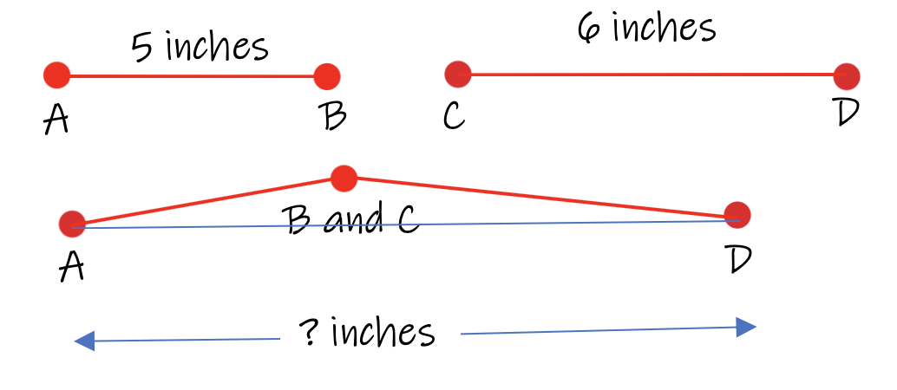

In this unit we will focus on the Segment Addition Postulate.
The segment addition postulate is a rule that tells us how we should measure the lengths or heights of certain objects. If you know how to measure with a ruler or tape measure, then you already know the Segment Addition Postulate! We will formally define it in this lesson in Geometry terms, but it's all the same. We need to measure objects in real-life all the time. This lesson defines the technique and concepts associated with measuring objects.
Any object with length greater than zero is called a segment. All objects with lengths that can be measured are called segments.
Using the example below, calculate the length of the object.
Since the triangle is 3 inches long, and the square is 4 inches long, the entire length from the left side to the right side would be 7 inches long.
Congratulations! You just used the Segment Addition Postulate to get your answer. You knew that the whole length is the sum of the two lenths. That's exactly what the segment addition postulate tells you to do. Add the two lengths together to get the length of the whole object.
Since each section of the fence is 8 feet long, and if we only consider the three main sections of fencing in the photo, then the entire fence would be 8ft + 8ft + 8ft = 24 feet. Three panels of the fencing will cover 24 feet.
Four panels would cover 32 ft, five panels will cover 40 feet, and so on.
This is called the Segment Addition Postulate in Geometry. In the real-world we use this postulate to make measurements of objects. This is one of two ways to make measurements in Geometry. We use segments and we also use "angles", which will be explained in a seperate lesson.
Let's look at a few different ways we can use the segment addition postulate.
One method is when we need to combine two segments together. In order to do this, we connect points B and C and create a new segment called AD. To calculate the length of AD, we add both of the original lengths to get the new length, 11 inches.
One rule to using the segment addition postulate is that the new segment you form by combining the original two segments must be perfectly straight and no gaps or overlapping of segments are allowed. We join the segments together and add the two original lengths to get the length of the new segment.

In this example, points B and C do not sit directly in a straight line from A to D. The segment addition postulate does not apply to this situation. The distance from A to D will be greater than 11 inches.